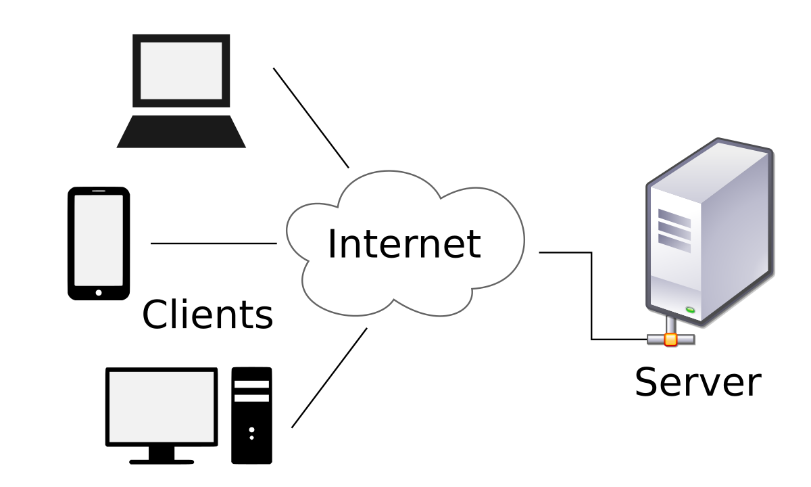
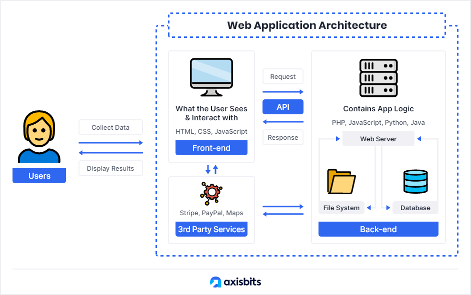
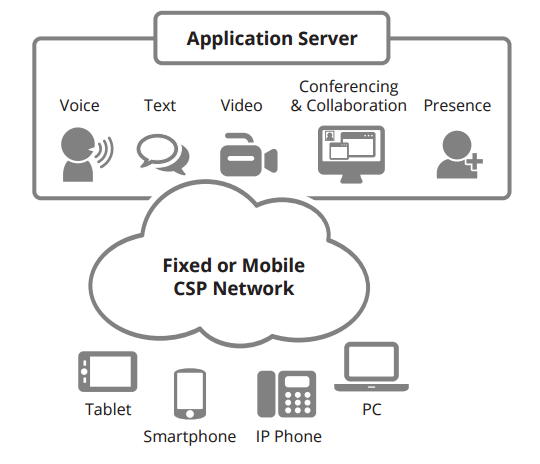

Web consists of billions of clients and server connected through wires and wireless networks. The web clients make requests to web server. The web server receives the request, finds the resources and return the response to the client. When a server answers a request, it usually sends some type of content to the client. The client uses web browser to send request to the server. The server often sends response to the browser with a set of instructions written in HTML(HyperText Markup Language). All browsers know how to display HTML page to the client.
 The client-server model, or client-server architecture, is a distributed application framework dividing tasks between servers and clients, which either reside in the same system or communicate through a computer network or the Internet. The client relies on sending a request to another program in order to access a service made available by a server. The server runs one or more programs that share resources with and distribute work among clients. The client server relationship communicates in a request–response messaging pattern and must adhere to a common communications protocol, which formally defines the rules, language, and dialog patterns to be used. Client-server communication typically adheres to the TCP/IP protocol suite. TCP protocol maintains a connection until the client and server have completed the message exchange. TCP protocol determines the best way to distribute application data into packets that networks can deliver, transfers packets to and receives packets from the network, and manages flow control and retransmission of dropped or garbled packets. IP is a connectionless protocol in which each packet traveling through the Internet is an independent unit of data unrelated to any other data units. Client requests are organized and prioritized in a scheduling system, which helps servers cope in the instance of receiving requests from many distinct clients in a short space of time. The client-server approach enables any general-purpose computer to expand its capabilities by utilizing the shared resources of other hosts. Popular client-server applications include email, the World Wide Web, and network printing.
 The web application architecture describes the interactions between applications, databases, and middleware systems on the web. It ensures that multiple applications work simultaneously. Let us understand it with a simple example of opening a webpage. As soon as the user hits the go button after typing a URL in the address bar of a web browser, it requests for that particular web address. The server sends files to the browser as a response to the request made. The browser then executes those files to show the requested page. Finally, the user is able to interact with the website. The most important thing to note here is the code parsed by the web browser. A web app works in a similar way. This code might or might not have specific instructions that tell the browser how to respond with respect to the different types of user inputs. Hence, a web application architecture has to include all the sub-components as well as the external applications interchanges for the entire software application, in the aforementioned case, which is a website. The web application architecture is indispensable in the modern world because a major portion of the global network traffic, as well as most of the apps and devices, make use of web-based communication.
The Hypertext Transfer Protocol (HTTP) is an application-level protocol for distributed, collaborative, hypermedia information systems. This is the foundation for data communication for the World Wide Web (i.e. internet) since 1990. HTTP is a generic and stateless protocol which can be used for other purposes as well using extensions of its request methods, error codes, and headers. Basically, HTTP is a TCP/IP based communication protocol, that is used to deliver data (HTML files, image files, query results, etc.) on the World Wide Web. The default port is TCP 80, but other ports can be used as well. It provides a standardized way for computers to communicate with each other. HTTP specification specifies how clients' request data will be constructed and sent to the server, and how the servers respond to these requests.
Web pages that use server-side scripting are often created with the help of server-side languages such as PHP, Perl, ASP, ASP.NET, JSP, ColdFusion and other languages. These server-side languages typically use the Common Gateway Interface (CGI) to produce dynamic web pages.
 An application server is a server that hosts applications.[1] Application server frameworks are software frameworks for building application servers. An application server framework provides both facilities to create web applications and a server environment to run them. An application server framework contains a comprehensive service layer model. It includes a set of components accessible to the software developer through a standard API defined for the platform itself. For Web applications, these components usually run in the same environment as their web server(s), and their main job is to support the construction of dynamic pages. However, many application servers do more than generate web pages: they implement services such as clustering, fail-over, and load-balancing, so developers can focus on implementing the business logic. In the case of Java application servers, the server behaves like an extended virtual machine for running applications, transparently handling connections to the database on one side, and, often, connections to the Web client on the other. Other uses of the term may refer to the services that a server makes available or the computer hardware on which the services run.
Web security must be a critical priority for every organization. Along with email, the web is one of the top vectors for cyberattacks. The web and the use of DNS services specifically are part of 91% of all malware attacks, and email and web together are a key part for 99% of successful breaches. While the importance of web security is undisputed, protecting against web security threats grows more challenging each day. From thwarting attacks to dealing with limits in skills and resources, IT security departments face serious challenges when trying to secure the web. In the past, security teams have deployed a collection of on-premises solutions to manage email and web security. But increasingly organizations are turning to comprehensive email and web security solutions – via integrated, cloud-based technologies that simplify the task and reduce the cost of reducing risk. And because attackers often leverage email and web channels together, a seamless and scalable strategy for protecting both is essential.